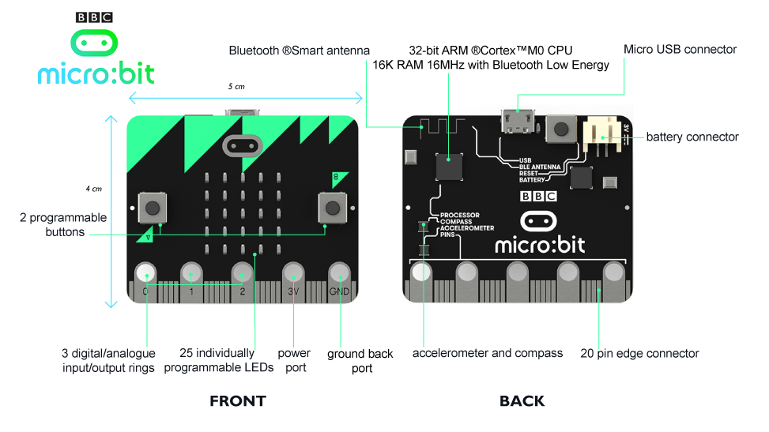

#About the micro:bit

The central processing unit (CPU) for the micro:bit is the Nordic nRF51822 and it controls all functionality offered by the micro:bit.
On board the micro:bit there is already:
- a 5 x 5 LED matrix display.
- 2 programmable buttons.
- a 3-axis accelerometer.
- an e-compass.
- Bluetooth.
- 20 user controlled pins, with Analog and Digital capabilities.
- serial capabilities over USB and the edge connector.
##Datasheets
Nordic nRF51822
The central processing unit of the micro:bit, the nRF51822, controls and drives all functionality on the micro:bit.
NXP MAG3110
The MAG3110 magnetometer is used in conjunction with with the 3-axis accelerometer (MMA8653) to create an e-compass.
NXP MMA8653
The MMA8653 accelerometer provides orientation and acceleration information of the micro:bit.